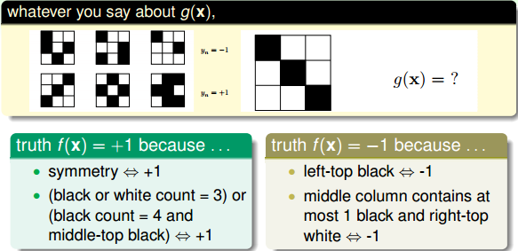
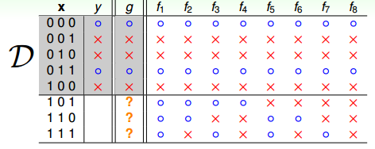
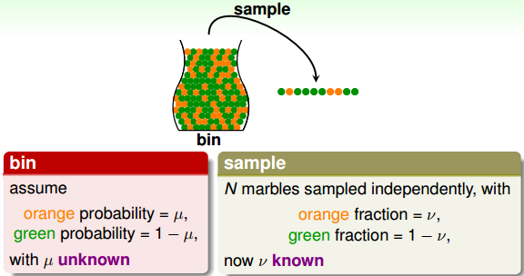
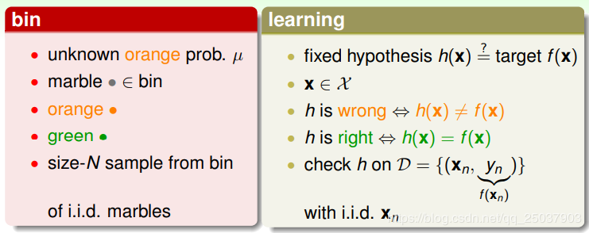
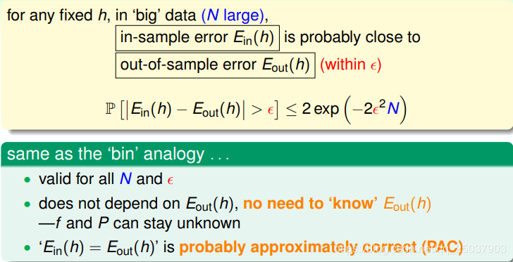
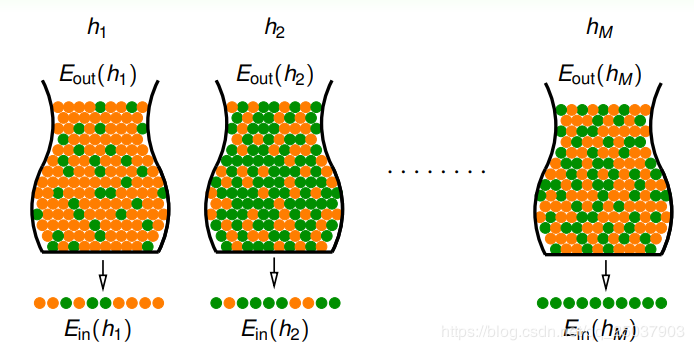
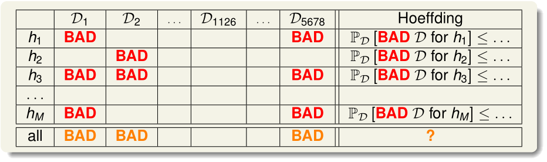

Learning is Impossible?
考虑一个例子，根据黑白格子的分布，来确定一个二分类问题，判断$g(x)$为+1还是-1。

由于一种现象可能存在多种解释，所以往往没有一个确定的答案，这时，我们可以说在机器学习中，无论使用了怎样的算法，机器都无法从资料中学到任何东西。
再看一个数学上的二分类例子，其中特征$\mathcal{X}={0,1}^{3}$，$\mathcal{Y}={$O,X$}$，假设有8个hypothesis，都能够在已知数据$D$上对五个样本的分类都达到很好的效果，然而在$D$以外的未知数据上，每个hypothesis分类效果都不同，即$g \approx f$不一定成立。
机器学习的目的，恰恰是在未知数据上的预测效果与真实结果一致，而不是在已知结果上。

以上的例子告诉我们，机器学习想要在$\mathcal D$以外的数据集中得到接近$f$的g是几乎做不到的，我们无法确定某个$g$在经过$D$的学习后，对$f$接近还是不接近，如果我们坚持$f$是不明确的，那么任何$g$都可以说是错误的，。只能保证对$\mathcal D$有很好的分类效果，这个现象被称为no-free-lunch。
NFL定理表明没有一个学习算法可以在任何领域总是产生最好的效果，但至少存在一个$g$能够有较好的性能。
由此，我们需要对机器学习加上一些限制条件。
Probability to the Rescue
由上一节可知，机器学习在$D$以外的样本上是做不到完全正确的预测或分类的。因此需要采取一些限制，使其能够对未知的$f$做一些推论。
看下面的一个例子，求orange球所占的比例$\mu$。统计学上的方法是，从所有球中取出N个球作为样本，计算这N个球中orange球的比例$\nu$。那么这个$\nu$就有可能差不多接近$\mu$（probably approximately correct，PAC）。此时可以大致逼近$\mu$。

若取的样本N较小，可能$\nu$会离真实的$\mu$很远，因此需要限定两者的一个误差范围$\epsilon$。根據 Hoeffding’s Inequality，取樣的概率與樣本外的概率關係為：
$$\mathbb{P}[|\nu - \mu| > \epsilon] \leq 2\exp(-2\epsilon^{2}N)$$
此时我们并不需要去知道$\mu$的大小，只需要知道N越大，误差会越小。
Connection to Learning
为了将Hoeffding’s Inequality与机器学习对应起来，我们可以先假设我们有一个固定的$h(\mathbf x)$，由$h(\mathbf x)$得到的结果可以对应两种玻璃球的颜色orange，green，其中orange表示结果错误，green表示结果正确。

类似的，通过较大的取样样本N，可以在已知资料集$D$（对应上一节我们随手取出的N个玻璃球）上验证$h(\mathbf x)$的正确率来大致估计$h(\mathbf x)$在资料集$D$之外相对于$f$的正确率。
使用$E_{in}(h)$表示在已知样本集上的正确率，$E_{out}(h)$则表示样本集外的正确率，则可以根据Hoeffding’s Inequality得到：

此时我们不需要知道$E_{out}(h)$，就像上一节我们不需要知道$\mu$（可通过N得到的$\nu$推测）一样，也不需要知道$\mathbb P$，只要N足够大，$E_{in}(h)$跟$E_{out}(h)$自然就会比较小。
上述论证都只是绑定在一个$h$上的，更像是对一个$h$做verification，验证其效果好不好，真正的机器学习是要有选择的，会根据不同的学习资料，返回一个最终能够使用$g$给你。
Connection to Real Learning
假设在不同的$h$里，每个$h$都对应一个$E_{in}$跟$E_{out}$：

那就有一个问题：是否在某个集合$\mathcal D$上的例子中$E_{in}$最小的就是最好的$h$呢？
假设150个人丢同样的硬币，每人丢五次，有大于99%（$1-(1-\frac {1}{2^5})^{150}$）的概率会有人丢出5次都是正面的情况，那么这个情况是一个比较差的采样，因为硬币丢出正面的概率应该为50%。
机器学习中也会遇到类似的情况：在$\mathcal H$中选取经验误差（$E_{in}$）最小的$h$，有可能泛化误差（$E_{out}$）会很大。
对于坏样本与$h(\mathbf x)$，有以下关系图：

只要样本$\mathcal D$对某个$h$属于Bad Data，那么该$D$就是坏训练样本，会让机器学习对$h$的选择受到很大干扰。
对于给定的假设函数$h$，我们定义$E_{in}$很小而$E_{out}$很大的训练集$D$是坏训练样本，那么训练集$\mathcal D$对于全体$h$而言都是坏的几率为：
$$\begin{aligned} \mathbb P_{\mathcal {D}}[\text {BAD } \mathcal {D}] &= \mathbb P_{\mathcal {D}}[\text {BAD } \mathcal {D} \text{ for } h_1 \text{ or } \text {BAD } \mathcal {D} \text{ for } h_2 \text{ or … or } \text {BAD } \mathcal {D} \text{ for } h_m]\
&\leq \mathbb P_{\mathcal {D}}[\text {BAD } \mathcal {D} \text{ for } h_1] + \mathbb P_{\mathcal {D}}[\text {BAD } \mathcal {D} \text{ for } h_2] + … + \mathbb P_{\mathcal {D}}[\text {BAD } \mathcal {D} \text{ for } h_m]\
&\leq 2exp(-2 \epsilon^2N) + 2exp(-2 \epsilon^2N) + … + 2exp(-2 \epsilon^2N)\
&\leq 2Mexp(-2 \epsilon^2N)
\end{aligned}$$
这表明$\mathcal H$为有限集M个时，只要训练样本N够多，误差容忍$\epsilon$足够大时，就可以说最终得到的$g$的经验误差和泛化误差是PAC的。